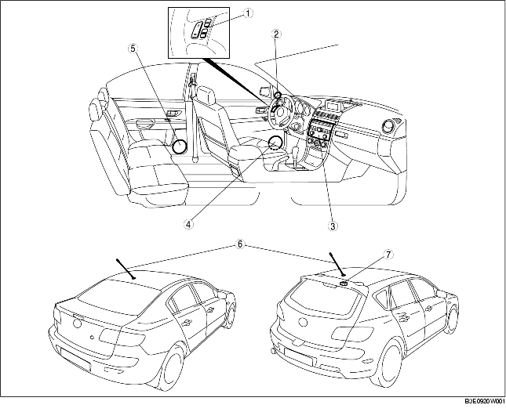

.
.
|
1
|
Tweeter avant
(voir la section DEPOSE/REPOSE DE TWEETER AVANT)
(voir la section INSPECTION DE TWEETER AVANT)
|
|
2
|
Unité LCD
(voir la section DEPOSE/REPOSE D'UNITE LCD)
|
|
3
|
Antenne GPS
(voir la section DEPOSE/REPOSE D'ANTENNE GPS)
|
|
4
|
Unité de navigation du véhicule
(voir la section DEPOSE/REPOSE D'UNITE DE NAVIGATION DU VEHICULE)
|
|
5
|
Module de panneau central
(voir la section DEPOSE/REPOSE DE MODULE DE PANNEAU CENTRAL)
(voir la section DEMONTAGE/REMONTAGE DE MODULE DE PANNEAU CENTRAL)
(voir la sectionDEMONTAGE/REMONTAGE D'UNITE AUDIO)
|
|
6
|
Contacteur de commande de navigation du véhicule
(voir la section DEPOSE/REPOSE DE CONTACTEUR DE COMMANDE DE NAVIGATION DU VEHICULE)
(voir la section INSPECTION DE CONTACTEUR DE COMMANDE DE NAVIGATION DE VEHICULE)
|
|
7
|
Haut-parleur de portière avant
(voir la section DEPOSE/REPOSE DE HAUT-PARLEUR DE PORTIERE AVANT)
(voir la section INSPECTION DE HAUT-PARLEUR DE PORTIERE AVANT)
|